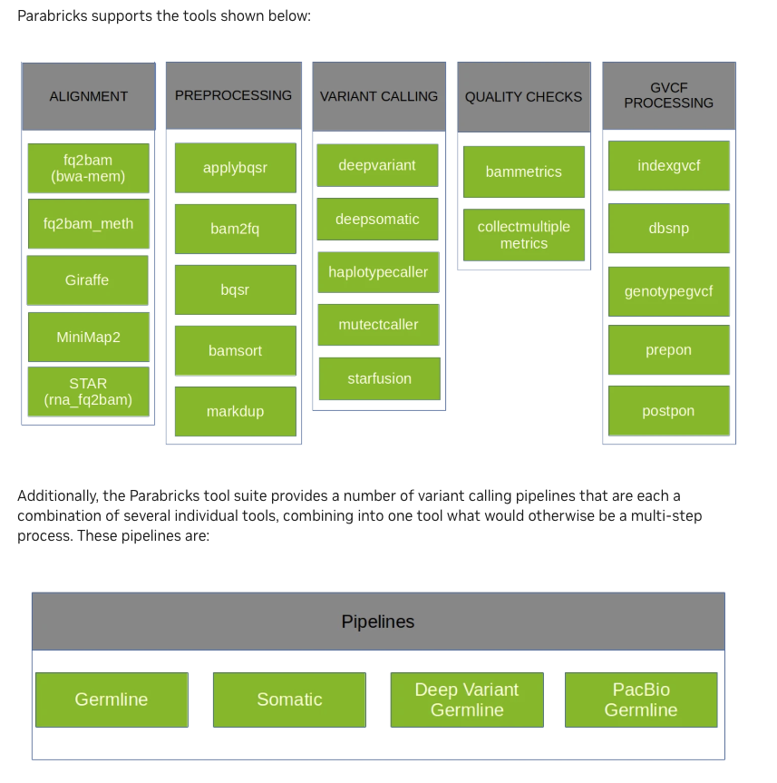
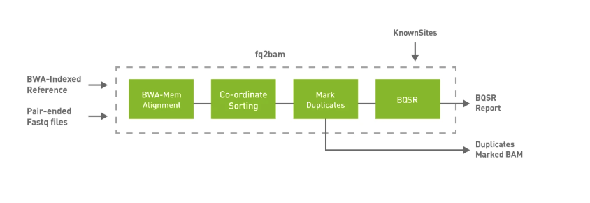
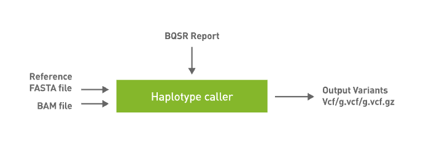

NVIDIA Parabricks
Parabricks offers range of accelerated NGS data processing tools/commands
-
“Parabricks was built from the ground up by GPU computing and Deep Learning experts who wanted to develop the fastest and most efficient possible implementation of common genomics algorithms.”
We can use these commands and create a simple NGS data processing workflows with two main stages
Read mapping and alignment refinement
Variant calling
 Ref:
Parabricks workflow (basic workflow)
Stage 1: Read mapping and alignment refinement
Step 1: fq2bam

Step 2: applybqsr
Compatible GATK4 Command:
gatk ApplyBQSR
Stage 2: Variant calling
Parabricks HaplotypeCaller
